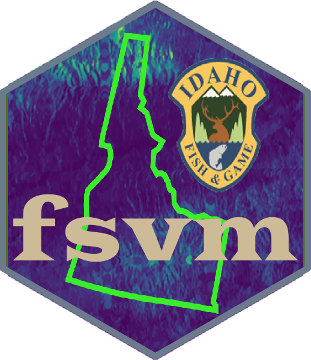
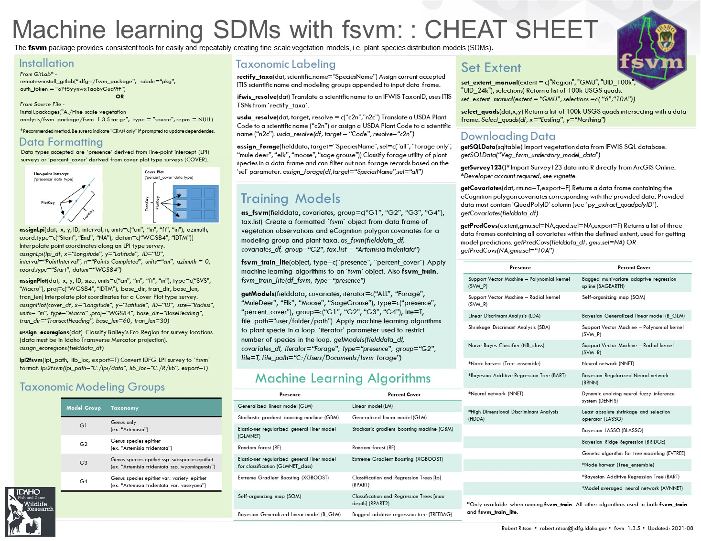
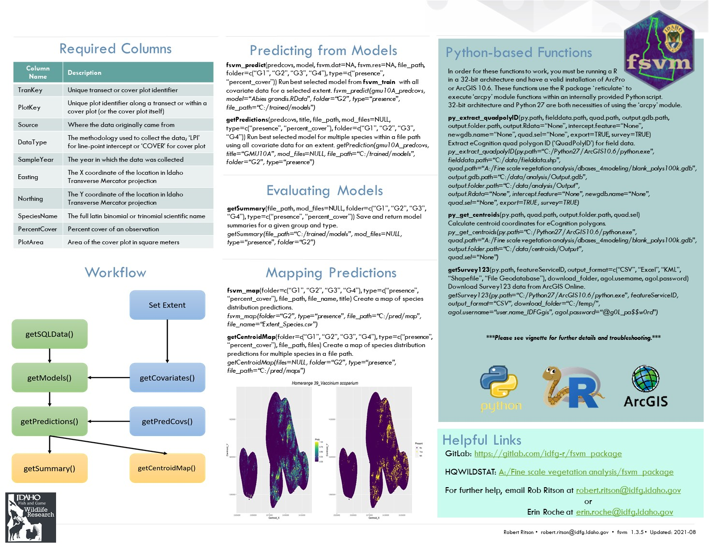
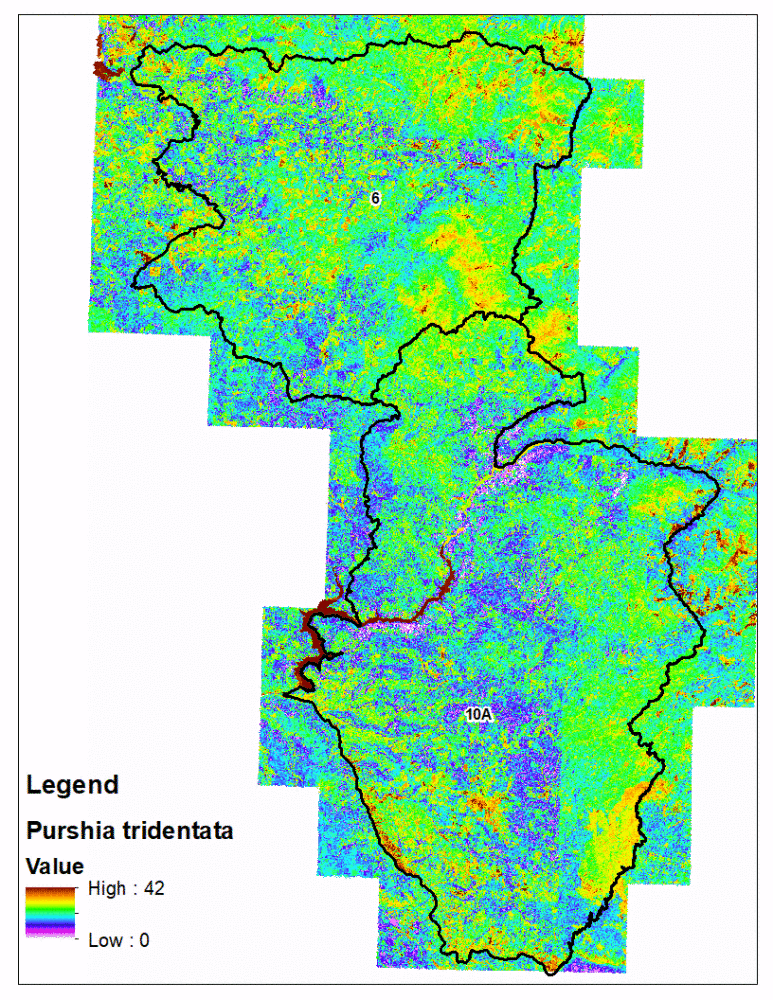

Field Data
674,414 total spatial records
5,918 vegetation surveys
17 sources
34 attributes
Covariates
42,825,874 eCognition polygons
58 attributes
Field Data
674,414 total spatial records
5,918 vegetation surveys
17 sources
34 attributes
Covariates
42,825,874 eCognition polygons
58 attributes
As a Research Associate for the Wildlife Management Institute, I contributed to the on-going development of Idaho Department of Fish and Game’s Fine Scale Vegetation Model. The purpose of this project is to model understory forage vegetation species important to big game ungulates at a one meter spatial resolution. To accomplish this, IDFG contracted with University of Idaho to develop a covariate database, which was created using eCognition object-oriented image analysis that divided Idaho into ~44 million individual shapes, each of which was populated with landscape covariates.
My contribution to further this project was to streamline the modeling process by creating R package fsvm. Using the eCognition covariate database, along with IDFG and partner vegetation survey data, were modeled using machine learning algorithms. In addition to managing the modeling algorithms, the fsvm package provides tools to manage and format survey data as well create prediction maps.
fsvm R package
 
I wrote several vignettes demonstrating the functions and tools included in the fsvm package in order to document the processes as well as assist others in using the package.

fsvm predictions with the eCognition polygons is technically challenging compared to traditional rasters
In order to more effectively sample the irregularly shaped eCognition polygons for new vegetation surveys, I wrote code which randomly selects one of polygons, then attempts to fit a 50 meter line within it so the standard line point intercept (LPI) survey protocol effectively samples it. The code works by first randomly generating a starting location within the polygon, randomly selecting a direction, then draws a 50 meter survey line. If that line intersects the border of the polygon, then the process is repeated until a 50 meter line is drawn which does not intersect the polygon or after 100 failed attempts.
This process can then be repeated with additional randomly selected polygons until the desired number of survey options is achieved. This gives field personnel fixed options when conducting field vegetation surveys and ensures the surveys they conduct effectively sample the polygon instead of straddling multiple polygons. This also saves the analyst time by automating the generation of possible surveys which meet the desired criteria.
buff_sample <- function(poly,buff,r=10){
p <- sf::st_cast(poly,"MULTILINESTRING")
n <- 0
repeat{
n <- n + 1
rand_start <- sf::st_sample(poly,1)
d <- as.numeric(sf::st_distance(rand_start,p))
if(d >= buff | n == r){
break
}
}
if(n == r & d < buff){
return(NA)
}else{
return(rand_start)
}
}
st_fitLPI <- function(poly, r=200, buff=5, len=50){
poly <- sf::st_transform(poly,crs = "WGS84")
p <- sf::st_cast(poly,"MULTILINESTRING")
permute_dirs <- sample(1:360)
rs <- buff_sample(poly,buff,r)
if(is.na(rs)){
return(NULL)
}else{rs <- sf::st_transform(rs,crs = "WGS84")}
for(j in 1:length(permute_dirs)){
dp <- geosphere::destPoint(rs[[1]][], b = permute_dirs[j], d = len) %>%
sf::st_point(.) %>% sf::st_sfc(.) %>% sf::`st_crs<-`("WGS84")
lpi <- sf::st_cast(c(rs[[1]],dp[[1]]),"LINESTRING")
int <- sf::st_intersects(lpi,p, sparse = F)
if(isFALSE(int)){break}
}
if(isTRUE(int)){
return(NULL)
}
df <- data.frame(QPID = poly$QuadPolyID,
Shape = sf::st_geometry(lpi)) %>%
sf::st_sf(.) %>% sf::`st_crs<-`("WGS84")
return(df)
}require(dplyr)
usgs24k <- sf::st_read("C:/Users/rritson/Documents/GitHub/USGS24k/USGS24k.shp")
r1quads <- sf::st_read("C:/Users/rritson/Documents/GitHub/Extents/IDFG Regions.shp") %>%
dplyr::filter(ID == "1") %>%
sf::st_intersects(.,usgs24k) %>% as.data.frame(.) %>%
dplyr::mutate(Quad = usgs24k$UID[col.id]) %>%
dplyr::select(-row.id,-col.id)
quads <- dir("A:/Fine scale vegetation analysis/dbases_4modeling/24kpolys",pattern=".rds",full.names = T)
flist <- quads[which(basename(quads) %in% paste0("q",r1quads$Quad,".rds"))]
water <- sf::st_read("C:/Users/rritson/Documents/GitHub/extents/ID_Lakes.shp")
fgrid <- readRDS("C:/Users/rritson/Documents/FineScaleVegModel/Field_LPI/Faragut_QuadPoly_Selections.rds")
## Loop through list
out <- sf::st_sfc()
sf::st_crs(out) <- sf::st_crs(usgs24k)
for(i in 1:length(flist)){
print(paste(i,"of",length(flist)))
# Read 24k quad w/ in R1 grid
temp <- readRDS(flist[i]) %>% dplyr::mutate(QuadPolyID = paste0(quad,"_",id))
wint <- sf::st_intersection(temp,water)
temp <- temp[which(!(temp$id %in% wint$id)),] #Filter out open water quad polygons
temp <- temp[which(!(temp$QuadPolyID %in% fgrid$QuadPolyID)),]
# Randomly select 50 quadpolys from each Faragut quad
int <- temp %>%
dplyr::filter(QuadPolyID %in% QuadPolyID[sample(1:nrow(.),50)]) %>%
dplyr::select(QuadPolyID,Shape)
# Collect output
out <- rbind(out,int)
}
nrow(out) == length(unique(out$QuadPolyID))
saveRDS(out,"C:/Users/rritson/Documents/FineScaleVegModel/Field_LPI/R1_QuadPoly_Selections.rds")
# Draw LPIs a priori
rgrid <- readRDS("C:/Users/rritson/Documents/FineScaleVegModel/Field_LPI/R1_QuadPoly_Selections.rds")
source("C:/Users/rritson/Documents/FineScaleVegModel/Field_LPI/fitLPI_inpoly_function2.R")
require(dplyr)
##Try Drawing One 50m line
#reps <- 50 #number of repeats
len <- 50 #LPI line length (in meters)
buff <- 5 #Buffer distance from polygon edge
out <- sf::st_sfc()
sf::st_crs(out) <- sf::st_crs("WGS84")
for (i in 301:600) {
print(paste("Beginning",i,"of",nrow(rgrid)))
pb = txtProgressBar(min = 0, max = 360, initial = 0)
poly <- rgrid[i,] %>% sf::st_transform(.,crs = "WGS84")
p <- sf::st_cast(poly,"MULTILINESTRING")
permute_dirs <- sample(1:360)
rs <- buff_sample(poly,buff,r=200)
if(is.na(rs)){next}else{rs <- sf::st_transform(rs,crs = "WGS84")}
for(j in 1:length(permute_dirs)){
setTxtProgressBar(pb,360)
dp <- geosphere::destPoint(rs[[1]][], b = permute_dirs[j], d = len) %>%
sf::st_point(.) %>% sf::st_sfc(.) %>% sf::`st_crs<-`("WGS84")
lpi <- sf::st_cast(c(rs[[1]],dp[[1]]),"LINESTRING")
int <- sf::st_intersects(lpi,p, sparse = F)
if(isFALSE(int) | j == length(permute_dirs)){
break
}
}
close(pb)
if(isTRUE(int) & j == length(permute_dirs)){
print("Failed.")
next
}
print("Success!")
df <- data.frame(QPID = poly$QuadPolyID,
Shape = sf::st_geometry(lpi)) %>%
sf::st_sf(.) %>% sf::`st_crs<-`("WGS84")
out <- rbind(out,df)
gc()
}
saveRDS(out,"C:/Users/rritson/Documents/FineScaleVegModel/Field_LPI/R1_QuadPoly_Lines_1.rds")
sf::st_write(out,"C:/Users/rritson/Documents/FineScaleVegModel/Field_LPI/R1_QuadPoly_Lines.shp")